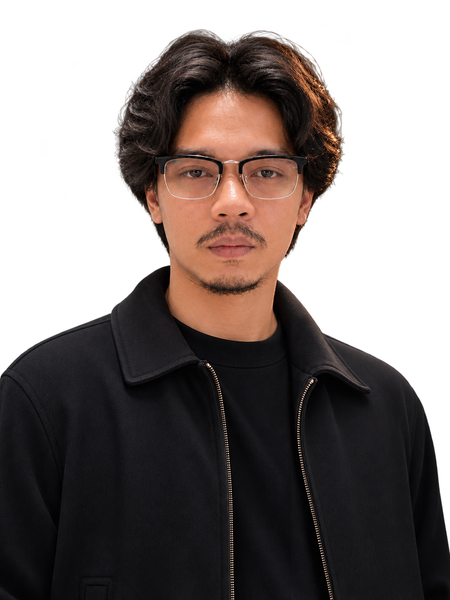

PORTFOLIO


 ALFIN ARDIAN
ALFIN ARDIANVIDEOGRAPHER
CERITA DALAM SETIAP FRAME
Freelance videographer dengan pengalaman sejak 2014. Menangani pengambilan gambar, B-roll, wawancara, dan pencahayaan untuk berbagai produksi video.
TERBUKA UNTUK PROYEK↗Videographer dan camera operator untuk company profile, iklan, event, musik, dan video produk.
BERBASIS DI SURAKARTA ✳02 / PROSES KERJA ✦
- 01
PERSIAPAN
Memahami kebutuhan produksi dan alur kerja bersama tim.
- 02
PENDEKATAN VISUAL
Menentukan framing, komposisi, lensa, dan camera movement.
- 03
PENGATURAN KAMERA
Exposure, white balance, depth of field, log, dan frame rates.
- 04
PENGAMBILAN GAMBAR
Kamera utama, B-roll, wawancara, dan pencahayaan sesuai kebutuhan.
- 05
PENYELESAIAN
Monitoring, media backup, dukungan editing, dan delivery.
03 / PERALATAN KERJA ✦
ECOSYSTEM
LENSES
FLUID HEAD
RECORDER
RIG
VIDEO
DOLLY
POST PRODUCTION
Adobe Premiere Pro · Adobe Audition
Berkarya secara mandiri dan berkolaborasi dalam tim sejak 2014. Proyek berbayar sejak 2015.
05 / KONTAK
Produksi video untuk
kebutuhan Anda.
TERBUKA UNTUK PROYEK BARU
Hubungi saya untuk membahas kebutuhan, ruang lingkup, dan alur produksi video.
KIRIM PESAN✦